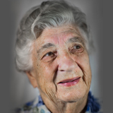

Dorothy Harris Dance Studio Donation

The *NEW* dance studio is in planning stages for the new PAW Centre at the U of A. Funding for this project has been cut back and now there is no money in the budget for a dance floor!!!
Obviously, this is the most important part of a dance studio. All else is superfluous. A campaign is being launched to raise the money for this floor and to finish the studio. In honor of the dance founder at the U of A, it will be named the Dorothy Harris Dance Studio.
If you would like to help our dancers receive a real dance floor, the Office of Advancement is accepting donations. Own a piece of the floor and join in the legacy of Dorothy Harris.
Or,
Contact: Mark Korthuis, Asst Director, PER Office of Office of Advancement
Phone: 780.248.1891
Fax: 780.492.1008
eMail: mark.korthuis@ualberta.ca
Thanks to all those who have provided financial and in-kind contributions to the Orchesis Dance Group over the years. We would like to say a special thank you to some of the group’s monumental supporters like:
Amanda Karpyshin
Doug MacDonald
J'adore Dance
Downey & Associates
Anastasia Maywood
Evelyn Charles Academy
Varina Crisfield
Twyla Malcolm
Ephram Dei Medici
Sarisa Figueroa de Toledo
William Thompson
and our hardworking board members:
Kathy Metzger-Corriveau
Angela Sekulic
Maura Sutherland
Wendy Gervais
Phil Kloc
Thank you!
If you would like to join our list of supporters by making a one-time donation, please mail a cheque donation to the Orchesis Dance Society and send to:
Orchesis Dance Society, c/o Tamara Bliss
E4-09 Van Vliet Centre, University of Alberta
Edmonton, AB
Canada T6G 2H9
Your donations will be used for things like grants for dancers and choreographers, extra costs of Motif and the Orchesis Summer Dance Intensives.
If you are interested in volunteering your time toward the efforts of the Orchesis Dance Society in supporting the Orchesis Dance Group, please send us an email:
orchesisdancesociety@gmail.com
We can always use a helping hand and welcome new and former supporters to the Orchesis Dance Society.